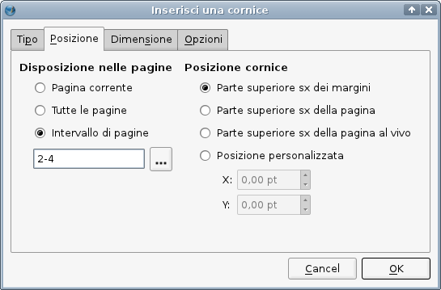
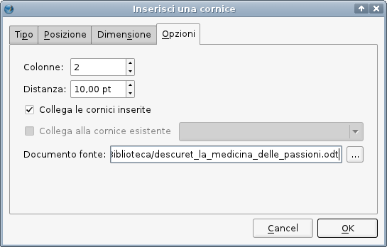
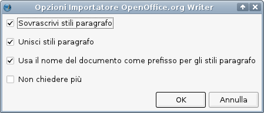
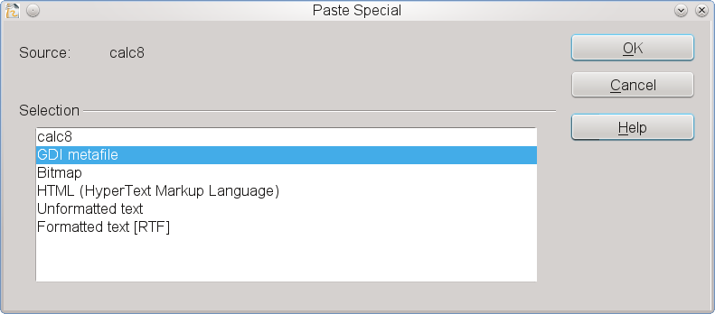

Quando la SUN Microsystems avviò il progetto OpenOffice.org, introdusse anche un nuovo tipo di formati di file. Mentre StarOffice (il predecessore di OpenOffice) salvava i dati in formato binario, i file di OpenOffice.org consistevano di diversi file XML riuniti in un unico archivio ZIP. In seguito, i formati di file sviluppati per OpenOffice.org furono la base per un nuovo standard per i documenti da ufficio (come documenti di testo, fogli elettronici o presentazioni). Questo standard è stato sviluppato dalla Organization for the Advancement of Structured Information Standards (OASIS), ed è detto OpenDocument (ODT). L'OpenDocument è divenuto uno standard ISO nel 2006 (ISO/IEC 26300:2006).
Grazie alla chiara documentazione tecnica, il team di Scribus ha creato alcune utili funzioni per l'importazione da file ODT, che saranno migliorate in futuro.
L'importatore per documenti Writer (SXW) e ODT opera su una data cornice di testo e importa soltanto il testo contenuto nel documento. Immagini e disegni devono essere salvati separatamente al di fuori del documento Writer, dopodiché ciascuno di essi può essere importato individualmente. Quindi, da un documento Writer complesso comprendente tabelle o grafici, questi ultimi non vengono importati. Tabelle, grafici o altri oggetti incorporati devono essere inseriti ciascuno in un documento Draw ed esportati come spiegato più avanti.
L'aspetto più importante da considerare per ottenere un'importazione senza intralci da un file SXW/ODT è l'utilizzo attento degli stili in Writer (o altro elaboratore di testo ODT-compatibile). Se gli stili sono ben impostati, per Scribus sarà necessario meno tempo per formattare il testo e assegnargli gli stili. Tutti i particolari stili di paragrafo presenti nel documento Writer o ODT vengono automaticamente importati nel documento di Scribus.
Questo comando importa tutto il testo dal documento sorgente, quindi dovreste fare in modo che vi sia abbastanza spazio nella cornice, oppure collegate altre cornici a quella in cui state importando il testo. Potete tranquillamente importare 10, 20 o perfino 50 pagine di testo in un colpo solo; in pratica, però, è bene non superare la lunghezza di un capitolo (15–30 pagine) per non rendere l'operazione troppo pesante.
Se avete un'idea di quante cornici di testo sono necessarie per il testo importato, potete servirvi di un'opzione avanzata per l'importazione. Si trova nel menù principale: Inserisci > Cornice ....
La finestra di dialogo “Inserisci una cornice” consiste di quattro schede. Nella prima, “Tipo” dovete selezionare (nel nostro caso) “Cornice di testo”. Nella seconda, “Posizione”, potete indicare le pagine in cui le nuove cornici saranno inserite e la loro posizione nella pagina.
|  |
Nella terza scheda, “Dimensione”, potete impostare le dimensioni delle cornici che saranno inserite, e nella quarta scheda, “Opzioni” potete indicare il contenuto della cornice e il suo aspetto:
|  |
Quando si esegue l'importazione di testo da OpenOffice.org vi sono quattro importanti opzioni il cui uso deve essere valutato attentamente:
|  |
prefs14.xml che si trova nella cartella nascosta ./scribus nella vostra home directory: occorre aprirlo con un elaboratore di testo, cercare la stringa di testo attribute key"=ask-Again" value=0 e sostituire “0” con “1”.Poiché Scribus ha capacità molto limitate di gestire tabelle, può essere più comodo creare una tabella in un'applicazione per fogli elettronici come Calc di OpenOffice.org. Ecco una spiegazione passo per passo su come importare tabelle da Calc:
1. create la tabella che vi serve in Calc:
|
2. selezionate gli elementi della tabella di cui avete bisogno in Scribus (non l'intero foglio) e copiateli negli Appunti, create un nuovo documento OpenOffice.org Draw, e date il comando Modifica > Incolla speciale > GDI Metafile per inserire la tabella in Draw come file vettoriale:
|  |
3. selezionate File > Esporta per esportare la tabella come file EPS. Assicuratevi che nella finestra di esportazione sia selezionata l'opzione “Selezione”, altrimenti sarà esportata l'intera pagina.
4. ora importate il file EPS in Scribus come disegno vettoriale, con il comando File > Importa > Carica file vettoriale. Come risultato avrete nel documento una tabella ben formattata, che può essere modificata con gli strumenti vettoriali di Scribus:
 |
Per eseguire quest'operazione vi sono due metodi. Il primo consiste nell'usare l'importatore nativo. Per molti disegni esso funziona molto bene; ma in alcuni casi, specialmente con disegni contenenti sfumature, può essere preferibile provare esportandoli in formato EPS o SVG.
È importante notare che gli oggetti tridimensionali di Draw non vengono esportati bene, poiché sono limitati dalla risoluzione dello schermo; spesso risultano di scarsa qualità anche quando vengono stampati, e alle risoluzioni usate nella stampa appaiono pixelati. Inoltre il filtro di importazione di Scribus non è in grado di importare tutte le forme, né certi tipi di linee (ad esempio i connettori).
Se avete bisogno di usare oggetti di questi tipi, c'è un'affidabile soluzione alternativa. Come quasi ogni programma da cui è possibile stampare, OpenOffice.org dà la possibilità di stampare su file, invece di inviare i dati alla stampante. Basta andare in File > Stampa in OpenOffice.org e contrassegnare l'opzione “Stampa nel file”. Su Linux/UNIX e Mac OS X il risultato sarà un file PostScript.
Su Windows e OS/2 è necessario prima installare un driver per stampante PostScript (ad esempio la Apple Color Laser Writer). Quando vi si chiede di inserire un nome per il file di stampa, selezionate o aggiungete “ps” come estensione del file.
Infine potete aprire il file oppure importarlo in Scribus come file vettoriale. Questa volta il contenuto è identico, o quasi, all'originale. Anche le forme tridimensionali a bassa risoluzione hanno contorni lisci.
Il modo più sicuro consiste nel creare una formula in OpenOffice.org Math e salvarla come SXM oppure ODF. Poi aprite OpenOffice.org Draw e create un nuovo file. Selezionate Inserisci oggetto > Formula: avrete un piccolo quadrato incorporato nello spazio di lavoro di Draw. Poi aprite Modifica oggetto nel menù contestuale: Draw avvierà Math. In Math, selezionate Strumenti > Importa Formula, trovate e importate la formula che avevate salvato e poi salvate per chiudere il file. La formula incorporata è ora modificabile come oggetto vettoriale. Salvate questo file di Draw, poi esportatelo come EPS e importatelo in Scribus. Le formule e il testo saranno importati come oggetti vettoriali scalabili, e di conseguenza potranno essere stampati con risultati di qualità molto alta e non daranno preoccupazioni quando esportati in PDF. Salvare il file Draw e tentare di importarlo con i suoi oggetti incorporati non funziona, poiché Scribus non può accedere direttamente a questi oggetti.
Vedi anche: